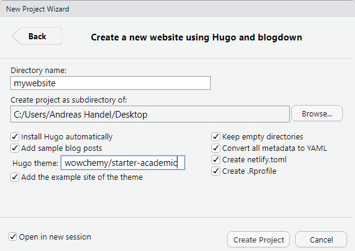

The following are step-by-step instructions for creating your own website using blogdown, Hugo and Netlify.
In part 2, you will learn how to add GitHub to your workflow to make things even more automated and efficient.
Required skills
I assume that you have general computer literacy, but no experience with any of the tools that will be used. Also, no coding, web-development or related experience is expected.
What this document covers
This document is meant to provide you with the minimum required instructions to get your own website up and running quickly. As such, instructions and background information are kept at a minimum. I used a recipe-like approach by giving hopefully detailed and specific enough instructions to get things to work. I’m not covering any why here or provide much further explanations. If you decide you like to use this setup for your website, you will likely want to go beyond this document and learn a bit more about the various tools involved in the process. To that end, links to further resources are provided. Those resources also discuss a bit why you would want this setup versus something like e.g. Wordpress.
Who this is (not) for
This way of making and hosting a website might be for you if:
- You are (or would like to be) an R, RMarkdown and GitHub user. This is a method of creating a website using those tools which very efficiently fits into such a workflow.
- You want a way to host a website where all the content is fully controlled by you, and the website can be hosted without much resources (and for free).
- You are curious about R/RMarkdown/GitHub, how to use it to build a website, and you’ve got a bit of time to spare and want to give it a try.
This way of making and hosting a website might not be for you if:
- Your main workflow is MS Word, Powerpoint, etc. and you are not interested in R/Markdown/GitHub.
- You want everything accessible through a graphical interface.
Motivating Examples
If you want to see a few nice examples of websites written with blogdown/Hugo, check these out:
Many more examples of blogdown/Hugo websites are out there. See e.g. here or here.
Pre-requisites
First, you need to set up accounts and install some software for the tools we will be using.
Get a Netlify account
Go to the Netlify website and sign up for an account. Follow the sign-up steps to set up your account.
Install R and RStudio
If you don’t already have it on your computer, install R first. You can pick any mirror you like. If you already have R installed, make sure it is a fairly recent version. If yours is old, I suggest you update (install a new R version).
Once you have R installed, install the free version of RStudio Desktop. Again, make sure it’s a recent version. If you have an older verion of RStudio, you should update.
Installing R and RStudio should be fairly straightforward. If you want some more details or need instructions, see this page (which is part of an online course I teach).
Starting your website
With the above registration and installation bits out of the way, you can get started with your website. To do so, follow these steps:
- Open RStudio. Install the blogdown package by typing
install.packages('blogdown') in the R console (the lower left window in RStudio). Note that all R commands are case sensitive. You need to be online for this to work. You should see blogdown and several other packages being installed. You only need to do this step once, unless you upgrade R or change computers.
- Load
blogdown by typing library(blogdown) into the R console (you need to do this every time you open/re-load R/RStudio).
- Under
File, choose New Project, New Directory, Website using blogdown. On the following screen, specify a meaningful directory name (e.g. YOURNAMEWEBSITE), place it somewhere on your computer, check all boxes (apart from ‘open in new session’), and write gcushen/hugo-academic into the Hugo theme box.
The figure below shows the screen and choices you should make. Adjust for your own setup.

Now click Create Project. This creates a new website and installs and sets up the chosen theme, complete with a small sample site. Be patient, it might take some time. As long as you see a little red stop sign in the top left corner of the R Console window, you know things are still running. Once everyting is done, a file called config.toml will likely pop up. Ignore for now. You will see a lot of new files have shown up in your project/repository folder.
The command above installed a small example website. We can look at it by asking RStudio/blogdown to serve the site by typing serve_site() into the R console (make sure you did load blogdown with library(blogdown)). You might get a warning message, but hopefully things work and the bottom right window, which is the RStudio viewer, shows a website in blue (see figure).

Click on the symbol next to the broom in the top left corner of that window to see the website in your browser. This is your new site. Now it’s time to customize and create content.
A word about themes
Pretty much all modern websites follow the concept of splitting content from layout and only merging them at some point in the process of building a website. The formatting that gives a site a specific layout is often called a theme. The theme determines the look of your website. Hugo has a lot and quickly growing number of themes (though not as many as Wordpress). The idea is that you can switch themes and thus layout without too much difficulty. In practice, there is still often a good bit of adjustment needed when you go from one theme to another. Thus, it is worth spending some time deciding on a theme before you go “all in”. The Academic theme we use here is currently one of the most popular ones for Hugo. It has a lot of features. The drawback of that is that it’s fairly complex. I considered starting with a simpler theme for this tutorial. But I figured to illustrate what’s possible, and because it’s widely used and under active development, we’ll go with this fairly full featured theme. You can explore different themes later.
A brief explanation of your new website
The previous steps have given you a website with some example starter content. Any complex website has a certain structure consisting of folders and files. These files and folders either live only on a website server and you never see them (e.g. Wordpress), or they exist locally, as is the case for Hugo (and similar such website generators, e.g. Jekyll.)
Some of the files and folders you do not need to care much about, others you will need to intereact with. To get a bit of an idea what lives where, here is a quick overview. Some of this depends on the Hugo theme you are using, but most of them have a rather similar structure. Open the directory where you placed your website, either through the Files pane in RStudio, or by using File Explorer (or whatever that is called on a MacüòÉ).
- The folder
config contains files that control some of the overall website look and feel. We’ll visit them later. In Hugo, those files that control configuration are called either TOML or YAML files. Many files have bits of TOML/YAML and other content in them, as you will see below.
- The folder
content and its subfolders contain almost all the actual content for your website. We’ll edit some of that soon.
- The folder
public is the one that contains your finished website once Hugo has processed your content and applied the layout from your chosen theme. That folder is the one which you will place online e.g. on Netlify.
- The folder
static contains subfolders where you can store images and other media (e.g. pdf files or video/audio, etc) that you want to be part of your site.
- The folder
themes includes the different Hugo themes you installed. You can have several themes installed and switch between them. Note however that themes differ in their details of how they do things, so it is a good idea to check out a few themes first, then settle on one and build your website for real once you picked one.
- The other folders that might exist are ones you don’t need to worry about, at least not initially. Some of those folders can contain your own formatting and layout choices overwriting the main theme. We won’t discuss them here but once you really want to start configuring your site, those will become important.
Editing content
Now that you know a little bit how your website is structured, let’s dig in and add and modify it. We’ll start with some modifications, followed by creating new content.
Making things personal
Now let’s open the about.md file. You will notice that it doesn’t really contain any content. Instead, it pulls the content from another location, namely content in the authors folder. Go into /content/authors/admin/ and open the _index.md file. There you see the content that is displayed on the main page. Modify it with your personal information. Once you save your changes, you should see the website automatically being rebuilt. If you have, add a picture of yourself and replace the current avatar.jpg file. (Your picture needs to have that name). Also, while not required, you might want to rename the folder from admin to your name. Make sure this corresponds to the name you list in the _index.md file.
Cleaning up for now
Let’s turn off all other parts of the main site apart from the about widget. The easiest way is to remove all files apart from the index.md and about.md files. You probably don’t want to completely delete them (since you might want to use them later), thus I recommend you move them to some other folder on your computer. For instance you can make a folder called myfiles as a subfolder of your website folder and move the files into that folder.
If all of this worked, there should be a main page containing only a brief description of yourself.
A word on error messages.
If you make some changes that break the site, you will see an error message in the R console and the site won’t re-compile until you fix the problem. You often have to be careful to write things exactly as specified, and often with the right indentation, etc. Some fiddling is at times required. If you are stuck and think you broke it too badly, you can either look in the Academic theme documentation or go into the themes/hugo-academic/exampleSite folder and find the corresponding file you are editing there and see how it needs to look.
Editing settings
config.toml
I mentioned above that TOML/YAML is a language/structure used by Hugo to control all kinds of things. Most files have some TOML/YAML part, a few files are nothing but TOML and control a lot of settings. Let’s look at the most important files. The first one is config.toml located in the main website folder. Find and open it. You will see that it lists as title Academic. Change that to e.g. Website of YOURNAME. You will see this change show up on the main site. You can try what happens if you write something in the copyright section. The rest of this file doesn’t need further editing for now.
params.toml
open params.toml. This file lets you specify and control a lot of things. Try setting a different theme. Then read through the other parts. We won’t change them for now, but you might want to come back to them.
Create new content
Let’s create a blog post. First, let’s move the posts.md file back into the home folder. If successful, you should see several blog posts show up on the site. The actual files containing those posts are in the content/post folder. (Academic is unfortunately not very good about consistently using singluar or plural). You will see one file (both .Rmd and .html) in the main /post folder. That file was placed there by RStudio/blogdown. You will also see several folders, each containg a .md file and one or more images. Those are placed there by the creator of Academic. Both ways of placing blog posts is ok but separate folders tends to be more organized. Let’s first remove the existing posts. You can either delete them, or to be safe, move everything (apart from the _index.md file) to the folder you created earlier. You should see all posts disapear from the main page.
Now let’s create our first blog post. We can use an RStudio addin for this. Since I have found that sometimes the serve_site() command interferes with the addin functionality, let’s stop the serving (continuous building and displaying) of the website for now by restarting R (under Session).
Once you have restarted R, go to the Addins button (approximately under the Tools button) and choose New Post. Fill in the fields as shown in the figure. You can of course alter the categories and tags. Note that you should add another subdirectory below post/ so the blog post is created in its own folder.

Once you click done, the file should open. You will see that the things you specified in the boxes show up in the TOML area. Write some text below the TOML area (below the ---). The text you write should be formatted as (R)Markdown. For now, you can just write some plain text. Or try some Markdown formatting using the cheatsheet listed above.
Once you finished writing your new blog post, save your changes, then start the server again by re-loading the blogdown package (library(blogdown)), then type serve_site() into the R console.
More edits
Congratulations, you have built a website and wrote a blog post! Of course there is a lot you can do next. Write more posts, look at all the different elements/widgets you can turn on and modify, etc. As mentioned, the Academic theme has a lot of features. If you like what you see, continue exploring. If you think you want something simpler, check out other Hugo themes until you find one you like, then customize it. A lot of things are very similar across all Hugo themes (e.g. the TOML/YAML bits and the folder structure), but some details differ, so it’s good to pick a theme before you really start customizing it.
But for now, we’ll leave it at this. There is one more crucial step missing though.
Making your website public
So far, everything happened on your local computer. In a final step, we want to put the website online so everyone can see it. With Netlify, this is fairly simple. Log into your Netlify account. Under Sites, you should see a white box that says “drag and drop your site folder here”. Take the folder named public inside your website folder and drag it into that box. If things work right, after a few seconds you should see that your site is deployed. It will have a weird name and a URL (mine when I tried it just now was called https://cranky-lamport-fff53a.netlify.com/). Click on it and you will see your new website publicly online for everyone to see!
If you want, you can change the name of your site under Site settings. More advanced (not free but also not too expensive and not that hard) is to get your domain name, e.g. www.yourname.com or something like that.
If you want to add GitHub to the mix and have the deployment of your website automated, move on to part 2 of this post.